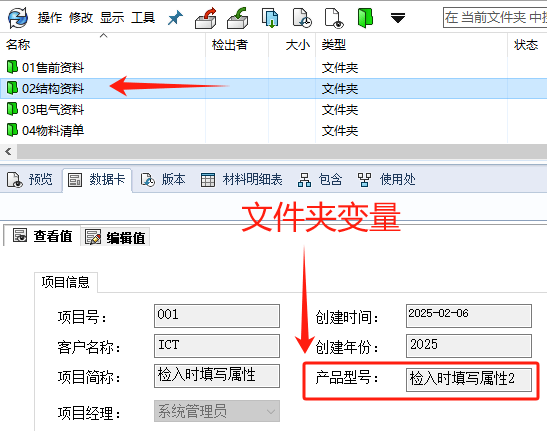

PDM写入默认属性
添加文件时填入
选择文件夹数据卡变量，以该变量的值作为默认值。
例如，如果选择了文件夹卡变量项目，且文件夹数据卡的值为 ：“检入时填写属性2”
那么当用户向此文件夹中添加新文件时，编辑框中将填入默认值 ：“检入时填写属性2”。
流程变换时填入
在【PDM管理-工作流程】里设置变换节点，在“操作”里【添加操作】
说明操作内容，并设置需要赋值的变量和状态变换时写入的值。例如：设置Checked_by（审批人变量名），赋值%fullname%（当前用户全名字符值）。这样就是把当前操作变换的用户名写入道审批人变量里。
Q&A
Q：文件夹默认值能否跟随变化？
不行，只能在首次添加文件到库时生效
Q：原本有属性默认值是否生效？
看该数据卡是否设置“默认盖写”。否：保证属性值为空即可，已有的属性值是不会生效覆盖的。是：会生效覆盖已有属性。
Q：已添加到库内的文件，在移动到其他项目文件夹是否会变化属性？
否，文件夹属性只在：外部文件——添加到——PDM库，这个阶段生效。